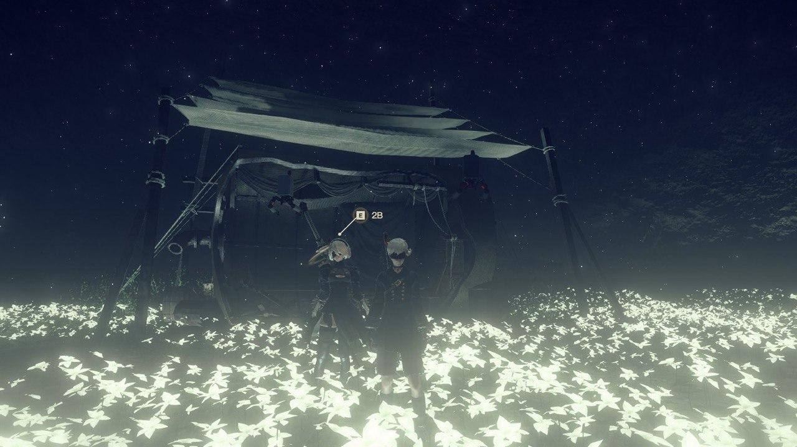
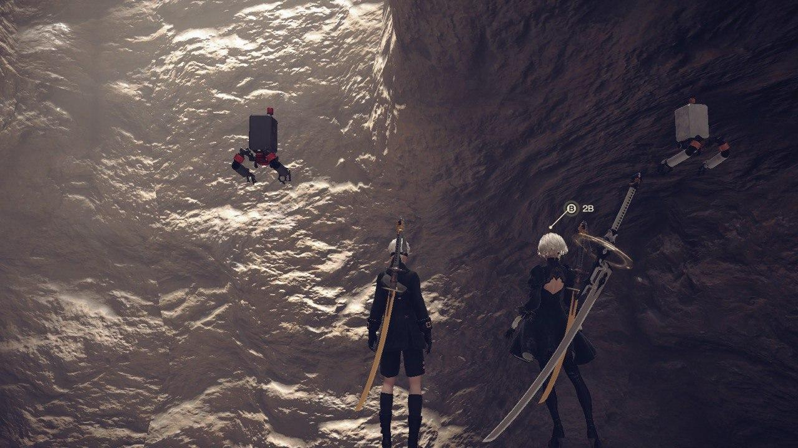

本来我已经戴好耳机准备睡觉了的，突然想起来2020年的年终总结还没有写，恰好脑子里有想写的东西，于是大概构思了一下，便从床上爬起来开灯打开电脑开写年终总结。

Lunar tear
因为思路不是很稳定，总是写了删删了写，所以隔了这么久才把原本已经放弃了不打算写的年终总结重新写出来。
果然还是深夜适合写这些东西。
今年原本打算能像去年那样在假期外出旅行的，然而疫情爆发后我就一直窝在家待着哪里都没去，不过在1月17号也就是武汉封城前几天，我自己一个人坐飞机跑去北京玩了一圈，当时还不知道有疫情这么一回事，到北京后就是找个地方住下，简单的去了一些景点，后来因为脚疼，很多路远的人多的地方都没有去成。在北京闲逛3天后就坐大客车回家了（一边坐车一遍骂京哈高铁京承段为什么一点进展都没有）。到家后不几天就听说武汉开始封城，然后北京就开始交通管制，现在想想还挺刺激的。
然后暑假本来打算去上海BW2020的，在票都买好了之后，因为外出需要和学校审批（此处省略若干字），最终漫展门票全打水漂，飞机票退票手续费还花了三百多块钱。
上半年宅在家里大半年，几乎是什么都没学，什么事情都没干。不过也借此机会每天都能睡个大懒觉，总之就是狠狠的歇了一顿，尝试着把高中时期欠的觉补回来，然而似乎并不管用。
然后总感觉自己每天都很累，明明什么都没有干但是身体总是一点力气都没有，总之下半年开学后经历了很长一段时间才重新适应了学校的生活，期间心理变化很复杂。
所以大二下学期和大三上学期的期末成绩基本上都是刚好及格。（真的是烤60分比烤80分还高兴）
年初看了几集超电磁炮3，看到后来因为它更新太慢了就忘了继续看了。之后还看了格莱普尼尔，看这个番纯粹是因为它的OP是Hikaru唱的，看着看着觉得挺有意思而且官方更新速度很快，于是就把第一季追完了。
然后因为Lacrimosa这首歌，我才看的黑执事，不过自己比较懒只看了第一季，第二季一直咕到现在都没有看，听说剧情挺虐的所以我更不敢看了。（明明第二季的ed比第一季的还好听）
本来还打算看新世纪福音战士的，也是因为懒，看了一集就不继续看了。
除此之外，年末的时候在睡前为了打发时间看了几集非自然死亡。
这一年又打了一遍尼尔：机械纪元。和第一次玩不太一样，二刷时我尽可能的多做支线任务，不开简单模式和自动芯片。不过通关后我还没有打E结局，总想找个时间把其他支线任务做完。
年初在逛淘宝时发现了台版的尼尔原著小说，于是毫不犹豫的把少年寄叶、短话和长话全都买了下来。不过截至目前我只看完了短话。在看完艾米尔的回忆那一章后很感动于是打开游戏找到相对应的支线任务，废了很大力气找到那三朵“Lunar Tear”（月之泪）之后，前往种着一大片月之泪的地下室。
在网上看攻略找到了艾米尔居住的家，于是又走了很远的路到地下很深的地方，到他家里面拿（偷）走了面具。
据说去他家偷完东西后会触发艾米尔的boss支线，不过因为在寝室没太多时间所以我没有继续玩下去。
蛮期待2021年4月发行的尼尔续作的，不过有些担心我的笔记本还能不能跑得起来。
尝试着二刷空境原著，不过没刷完，所以只好等以后有时间再看了。
2020年下半年花了很大力气尝试玩懂FGO，不过最终因为太肝、自己太非、没时间而劝退，前几章的主线太枯燥乏味了，而且我貌似只对FSN系列和空境系列的人感兴趣，FGO里面的人物基本和他们不沾边而且我也不认识。
很期待月姬重制版，尽管我目前还一点都不了解月姬。既然月姬重置版只在主机平台上映，尼尔续作也有主机版，那么我是不是应该提前准备一台PS4呢？
PS5水货太贵了还是算了，除非等国行，然而等国行又要等到4月份。
关键是我连PS4都买不起。
2021年1月22日后续： 最终买了二手港版PS4 Slim，考虑了价格、重量、性能、体积等因素后没有买Pro（主要是没钱），因此现在变得非常贫穷。 换了笔记本上拆下来闲置了一年的1T硬盘，尝试着在尼尔：伪装者发售前三刷一遍尼尔：机械纪元，因为PS4太好玩了所以现在在后悔为什么不早点买PS4。
2020年4月份的时候新开了一个Minecraft单机生存的坑，原本是打算看一下新版本（1.15.2）更新了什么新特性的（蜜蜂），结果玩上生存就停不下来了。先是花了两个星期用纯铁镐手挖两个史莱姆区块，用矿车运村民和僵尸照着B站的视频建了简易的刷铁机，之后又用不到一个月的时间解放末地。总之就是玩上了就停不下来了。然后照着B站各大UP主的视频做了末地刷沙机、然后是混凝土固化机，后来挂三向轰炸机肝了3天清了出生点空置域。用了短短几个月的时间一个人建了很多东西，去地狱打了凋零骷髅头，建海上刷怪塔刷火药和骨粉。后来物资储备足够多了之后就开始挖地铁（旧习难改吧），一年的时间挖了两条地铁线路，盖了十几座车站、一座跨海大桥、一栋摩天大楼。
原来单机生存还能玩得这么有意思，B站上有很多生电大佬，然而红科搬的视频我基本都看不懂。
后续可能要再修几条地铁，延长已有的线路，然后再搞一些建筑，炸一个原点空置域修全物品分类机，然后还打算升级1.16.4。
就回忆到这里吧，2020是个特别的一年。

犹豫了很久最后还是决定把之前删掉的部分文章恢复回来，不然总给人一种这个博客是在2020年创建的而不是2016年创建的错觉。
2020年博客鸽了很长一段时间，当时尽管并没有放弃博客但是我真的什么都写不出来，因为看到自己以前写的水文觉得很恶心而且十分不适，于是就在某个心情不好的时候删掉了。后来换了一个新的域名之后就再也没和任何人提起“我还有一个博客”这件事情，因为把博客的文章全删除后几乎没人访问我的博客，新的访客量到现在为止才800多，其中绝大多数都是我自己调试页面刷新时点出来的。
对啊博客就是用来记录生活的，所以就让“因为看不惯以前的自己写的啥也不是的水文最终将其全部删掉”也成为博客记录下的一件事吧。